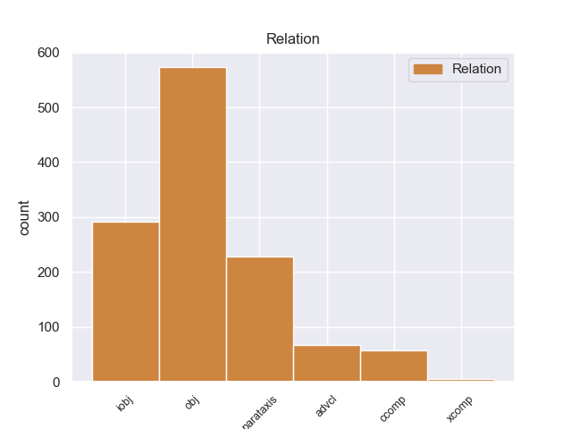
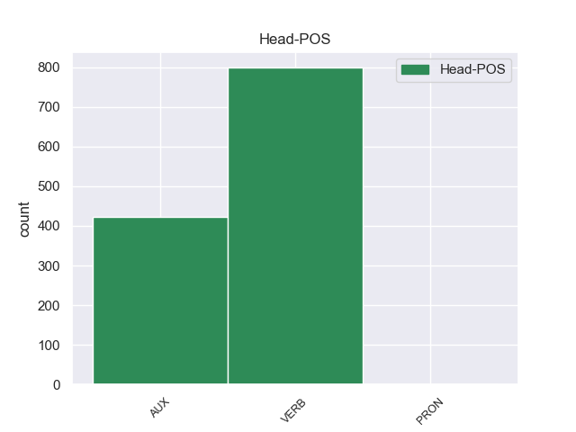
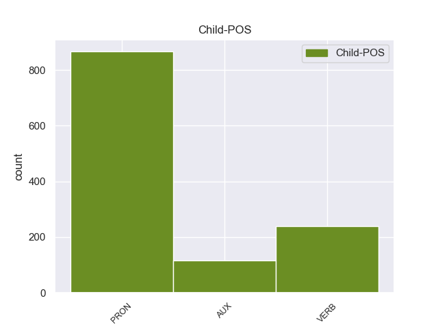

Distribution of features within this leaf



Agreement Rules sorted by frequency.
- When the dependent token is the object(obj) of the head token,
1 Così _ _ _ _ 0 _ _ _
2 i _ _ _ _ 0 _ _ _
3 piloti _ _ _ _ 0 _ _ _
4 perdono _ _ _ _ 0 _ _ _
5 secondi _ _ _ _ 0 _ _ _
6 importanti _ _ _ _ 0 _ _ _
7 e _ _ _ _ 0 _ _ _
8 le _ _ _ _ 0 _ _ _
9 altre _ _ _ _ 0 _ _ _
10 macchine _ _ _ _ 0 _ _ _
11 li li PRON PC Clitic=Yes|Gender=Masc|Number=Plur|Person=3|PronType=Prs 12 obj 12:obj _
12 superano superare VERB V Mood=Ind|Number=Plur|Person=3|Tense=Pres|VerbForm=Fin 0 _ _ _
13 . _ _ _ _ 0 _ _ _
1 Durante _ _ _ _ 0 _ _ _
2 la _ _ _ _ 0 _ _ _
3 staffetta _ _ _ _ 0 _ _ _
4 , _ _ _ _ 0 _ _ _
5 i _ _ _ _ 0 _ _ _
6 nuotatori _ _ _ _ 0 _ _ _
7 fanno fare VERB V Mood=Ind|Number=Plur|Person=3|Tense=Pres|VerbForm=Fin 0 _ _ _
8 una _ _ _ _ 0 _ _ _
9 squadra _ _ _ _ 0 _ _ _
10 di _ _ _ _ 0 _ _ _
11 4 _ _ _ _ 0 _ _ _
12 persone _ _ _ _ 0 _ _ _
13 : _ _ _ _ 0 _ _ _
14 ogni _ _ _ _ 0 _ _ _
15 nuotatore _ _ _ _ 0 _ _ _
16 nuota nuotare VERB V Mood=Ind|Number=Sing|Person=3|Tense=Pres|VerbForm=Fin 7 parataxis 7:parataxis _
17 solo _ _ _ _ 0 _ _ _
18 per _ _ _ _ 0 _ _ _
19 una _ _ _ _ 0 _ _ _
20 parte _ _ _ _ 0 _ _ _
21 di _ _ _ _ 0 _ _ _
22 il _ _ _ _ 0 _ _ _
23 percorso _ _ _ _ 0 _ _ _
24 di _ _ _ _ 0 _ _ _
25 gara _ _ _ _ 0 _ _ _
26 . _ _ _ _ 0 _ _ _
1 I _ _ _ _ 0 _ _ _
2 personaggi _ _ _ _ 0 _ _ _
3 di _ _ _ _ 0 _ _ _
4 i _ _ _ _ 0 _ _ _
5 fumetti _ _ _ _ 0 _ _ _
6 usano _ _ _ _ 0 _ _ _
7 la _ _ _ _ 0 _ _ _
8 parola _ _ _ _ 0 _ _ _
9 “ _ _ _ _ 0 _ _ _
10 Ouch _ _ _ _ 0 _ _ _
11 ” _ _ _ _ 0 _ _ _
12 quando _ _ _ _ 0 _ _ _
13 vanno _ _ _ _ 0 _ _ _
14 a _ _ _ _ 0 _ _ _
15 sbattere _ _ _ _ 0 _ _ _
16 contro _ _ _ _ 0 _ _ _
17 qualcosa _ _ _ _ 0 _ _ _
18 e _ _ _ _ 0 _ _ _
19 si si PRON PC Clitic=Yes|Person=3|PronType=Prs 20 iobj 20:iobj _
20 fanno fare VERB V Mood=Ind|Number=Plur|Person=3|Tense=Pres|VerbForm=Fin 0 _ _ _
21 male _ _ _ _ 0 _ _ _
22 . _ _ _ _ 0 _ _ _
1 Quando _ _ _ _ 0 _ _ _
2 c’ _ _ _ _ 0 _ _ _
3 è essere VERB V Mood=Ind|Number=Sing|Person=3|Tense=Pres|VerbForm=Fin 8 advcl 8:advcl _
4 il _ _ _ _ 0 _ _ _
5 terremoto _ _ _ _ 0 _ _ _
6 la _ _ _ _ 0 _ _ _
7 terra _ _ _ _ 0 _ _ _
8 trema tremare VERB V Mood=Ind|Number=Sing|Person=3|Tense=Pres|VerbForm=Fin 0 _ _ _
9 e _ _ _ _ 0 _ _ _
10 si _ _ _ _ 0 _ _ _
11 muove _ _ _ _ 0 _ _ _
12 . _ _ _ _ 0 _ _ _
1 Il _ _ _ _ 0 _ _ _
2 titolo _ _ _ _ 0 _ _ _
3 di _ _ _ _ 0 _ _ _
4 la _ _ _ _ 0 _ _ _
5 canzone _ _ _ _ 0 _ _ _
6 che _ _ _ _ 0 _ _ _
7 Luciano _ _ _ _ 0 _ _ _
8 Ligabue _ _ _ _ 0 _ _ _
9 ha _ _ _ _ 0 _ _ _
10 composto _ _ _ _ 0 _ _ _
11 per _ _ _ _ 0 _ _ _
12 il _ _ _ _ 0 _ _ _
13 film _ _ _ _ 0 _ _ _
14 Da _ _ _ _ 0 _ _ _
15 zero _ _ _ _ 0 _ _ _
16 a _ _ _ _ 0 _ _ _
17 dieci _ _ _ _ 0 _ _ _
18 è essere VERB V Mood=Ind|Number=Sing|Person=3|Tense=Pres|VerbForm=Fin 0 _ _ _
19 : _ _ _ _ 0 _ _ _
20 Questa _ _ _ _ 0 _ _ _
21 è essere AUX V Mood=Ind|Number=Sing|Person=3|Tense=Pres|VerbForm=Fin 18 ccomp 24:cop _
22 la _ _ _ _ 0 _ _ _
23 mia _ _ _ _ 0 _ _ _
24 vita _ _ _ _ 0 _ _ _
25 . _ _ _ _ 0 _ _ _
1 A _ _ _ _ 0 _ _ _
2 la _ _ _ _ 0 _ _ _
3 luce _ _ _ _ 0 _ _ _
4 di _ _ _ _ 0 _ _ _
5 quest' _ _ _ _ 0 _ _ _
6 ultimo _ _ _ _ 0 _ _ _
7 episodio _ _ _ _ 0 _ _ _
8 mi _ _ _ _ 0 _ _ _
9 piacerebbe _ _ _ _ 0 _ _ _
10 " _ _ _ _ 0 _ _ _
11 rifilmizzare _ _ _ _ 0 _ _ _
12 " _ _ _ _ 0 _ _ _
13 il _ _ _ _ 0 _ _ _
14 cinema _ _ _ _ 0 _ _ _
15 precedente _ _ _ _ 0 _ _ _
16 di _ _ _ _ 0 _ _ _
17 Nanni _ _ _ _ 0 _ _ _
18 , _ _ _ _ 0 _ _ _
19 compreso _ _ _ _ 0 _ _ _
20 il _ _ _ _ 0 _ _ _
21 suo _ _ _ _ 0 _ _ _
22 film _ _ _ _ 0 _ _ _
23 più _ _ _ _ 0 _ _ _
24 commovente _ _ _ _ 0 _ _ _
25 e _ _ _ _ 0 _ _ _
26 melo _ _ _ _ 0 _ _ _
27 che _ _ _ _ 0 _ _ _
28 è essere VERB V Mood=Ind|Number=Sing|Person=3|Tense=Pres|VerbForm=Fin 0 _ _ _
29 , _ _ _ _ 0 _ _ _
30 ancor _ _ _ _ 0 _ _ _
31 più _ _ _ _ 0 _ _ _
32 di _ _ _ _ 0 _ _ _
33 Bianca _ _ _ _ 0 _ _ _
34 , _ _ _ _ 0 _ _ _
35 La _ _ _ _ 0 _ _ _
36 Messa _ _ _ _ 0 _ _ _
37 è essere AUX VA Mood=Ind|Number=Sing|Person=3|Tense=Pres|VerbForm=Fin 28 xcomp 38:aux _
38 finita _ _ _ _ 0 _ _ _
39 " _ _ _ _ 0 _ _ _
40 . _ _ _ _ 0 _ _ _
Disagree Examples:
1 " _ _ _ _ 0 _ _ _
2 Grazie _ _ _ _ 0 _ _ _
3 Italia _ _ _ _ 0 _ _ _
4 , _ _ _ _ 0 _ _ _
5 ti ti PRON PC Clitic=Yes|Number=Sing|Person=2|PronType=Prs 6 iobj 7:iobj _
6 ho avere AUX VA Mood=Ind|Number=Sing|Person=1|Tense=Pres|VerbForm=Fin 0 _ _ _
7 dato _ _ _ _ 0 _ _ _
8 l' _ _ _ _ 0 _ _ _
9 oro _ _ _ _ 0 _ _ _
10 " _ _ _ _ 0 _ _ _
11 . _ _ _ _ 0 _ _ _
1 Mi mi PRON PC Clitic=Yes|Number=Sing|Person=1|PronType=Prs 2 iobj 2:iobj _
2 viene venire VERB V Mood=Ind|Number=Sing|Person=3|Tense=Pres|VerbForm=Fin 0 _ _ _
3 in _ _ _ _ 0 _ _ _
4 mente _ _ _ _ 0 _ _ _
5 una _ _ _ _ 0 _ _ _
6 mia _ _ _ _ 0 _ _ _
7 vecchia _ _ _ _ 0 _ _ _
8 cameriera _ _ _ _ 0 _ _ _
9 che _ _ _ _ 0 _ _ _
10 , _ _ _ _ 0 _ _ _
11 guardando _ _ _ _ 0 _ _ _
12 i _ _ _ _ 0 _ _ _
13 quadri _ _ _ _ 0 _ _ _
14 di _ _ _ _ 0 _ _ _
15 i _ _ _ _ 0 _ _ _
16 maggiori _ _ _ _ 0 _ _ _
17 artisti _ _ _ _ 0 _ _ _
18 contemporanei _ _ _ _ 0 _ _ _
19 , _ _ _ _ 0 _ _ _
20 da _ _ _ _ 0 _ _ _
21 Van _ _ _ _ 0 _ _ _
22 Gogh _ _ _ _ 0 _ _ _
23 a _ _ _ _ 0 _ _ _
24 Chagall _ _ _ _ 0 _ _ _
25 , _ _ _ _ 0 _ _ _
26 a _ _ _ _ 0 _ _ _
27 Modigliani _ _ _ _ 0 _ _ _
28 , _ _ _ _ 0 _ _ _
29 a _ _ _ _ 0 _ _ _
30 Picasso _ _ _ _ 0 _ _ _
31 , _ _ _ _ 0 _ _ _
32 diceva _ _ _ _ 0 _ _ _
33 che _ _ _ _ 0 _ _ _
34 sarebbe _ _ _ _ 0 _ _ _
35 stata _ _ _ _ 0 _ _ _
36 capace _ _ _ _ 0 _ _ _
37 di _ _ _ _ 0 _ _ _
38 far _ _ _ _ 0 _ _ _
39 li _ _ _ _ 0 _ _ _
40 anche _ _ _ _ 0 _ _ _
41 lei _ _ _ _ 0 _ _ _
42 . _ _ _ _ 0 _ _ _
1 mi mi PRON PC Clitic=Yes|Number=Sing|Person=1|PronType=Prs 2 iobj 2:iobj _
2 fecero fare VERB V Mood=Ind|Number=Plur|Person=3|Tense=Past|VerbForm=Fin 0 _ _ _
3 pagare _ _ _ _ 0 _ _ _
4 gli _ _ _ _ 0 _ _ _
5 hezbollah _ _ _ _ 0 _ _ _
6 per _ _ _ _ 0 _ _ _
7 liberare _ _ _ _ 0 _ _ _
8 due _ _ _ _ 0 _ _ _
9 ostaggi _ _ _ _ 0 _ _ _
10 in _ _ _ _ 0 _ _ _
11 Libano _ _ _ _ 0 _ _ _
12 . _ _ _ _ 0 _ _ _
1 Perché _ _ _ _ 0 _ _ _
2 , _ _ _ _ 0 _ _ _
3 diciamo dire VERB V Mood=Imp|Number=Plur|Person=1|Tense=Pres|VerbForm=Fin 13 parataxis 13:parataxis _
4 lo _ _ _ _ 0 _ _ _
5 , _ _ _ _ 0 _ _ _
6 in _ _ _ _ 0 _ _ _
7 confronto _ _ _ _ 0 _ _ _
8 a _ _ _ _ 0 _ _ _
9 la _ _ _ _ 0 _ _ _
10 Montessori _ _ _ _ 0 _ _ _
11 , _ _ _ _ 0 _ _ _
12 Pestalozzi _ _ _ _ 0 _ _ _
13 fa fare VERB V Mood=Ind|Number=Sing|Person=3|Tense=Pres|VerbForm=Fin 0 _ _ _
14 la _ _ _ _ 0 _ _ _
15 figura _ _ _ _ 0 _ _ _
16 di _ _ _ _ 0 _ _ _
17 un _ _ _ _ 0 _ _ _
18 gigante _ _ _ _ 0 _ _ _
19 " _ _ _ _ 0 _ _ _
20 . _ _ _ _ 0 _ _ _
1 Perché _ _ _ _ 0 _ _ _
2 , _ _ _ _ 0 _ _ _
3 diciamo dire VERB V Mood=Imp|Number=Plur|Person=1|Tense=Pres|VerbForm=Fin 0 _ _ _
4 lo lo PRON PC Clitic=Yes|Gender=Masc|Number=Sing|Person=3|PronType=Prs 3 obj 3:obj _
5 , _ _ _ _ 0 _ _ _
6 in _ _ _ _ 0 _ _ _
7 confronto _ _ _ _ 0 _ _ _
8 a _ _ _ _ 0 _ _ _
9 la _ _ _ _ 0 _ _ _
10 Montessori _ _ _ _ 0 _ _ _
11 , _ _ _ _ 0 _ _ _
12 Pestalozzi _ _ _ _ 0 _ _ _
13 fa _ _ _ _ 0 _ _ _
14 la _ _ _ _ 0 _ _ _
15 figura _ _ _ _ 0 _ _ _
16 di _ _ _ _ 0 _ _ _
17 un _ _ _ _ 0 _ _ _
18 gigante _ _ _ _ 0 _ _ _
19 " _ _ _ _ 0 _ _ _
20 . _ _ _ _ 0 _ _ _